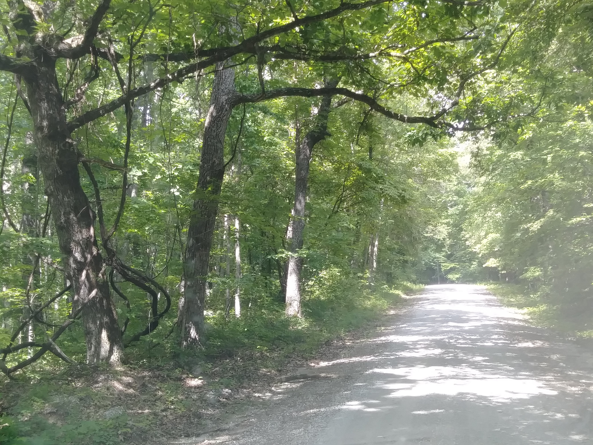

GPS COORDS: Lat-Long: 36.08204, -84.94926
Welcome to Catoosa Wildlife Management Area
Lat-Long: 36.08204, -84.94926
Crossville, TN - Cumberland County TN
Explore Crossville - Resources
Catoosa WMA
Catoosa Wildlife Management Area is located in Cumberland County, Tennessee. 800 acres of protected wildlife.
Amazing Views!

Column 2
Live Animals